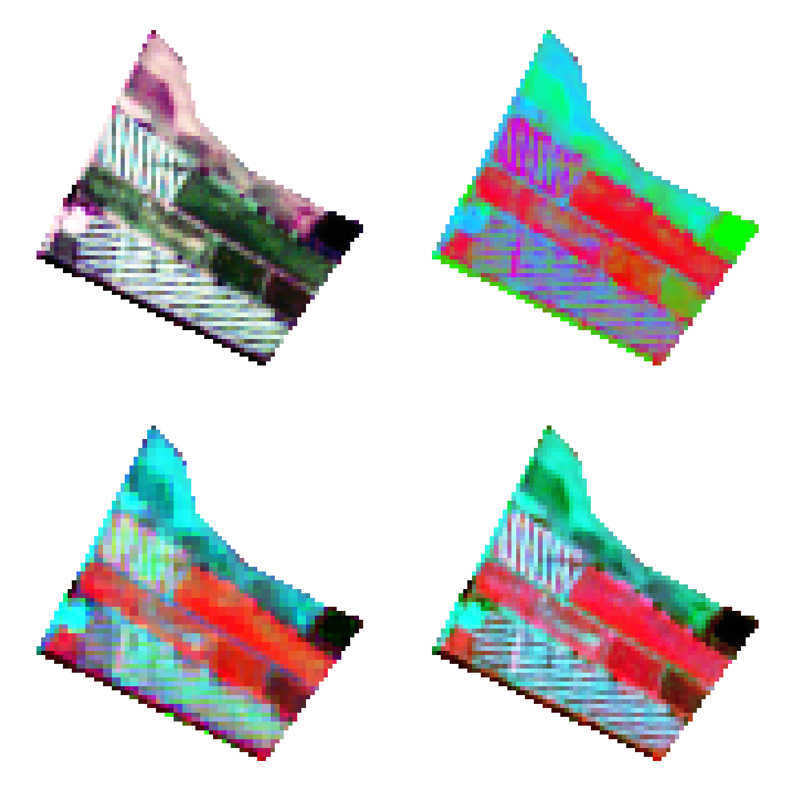
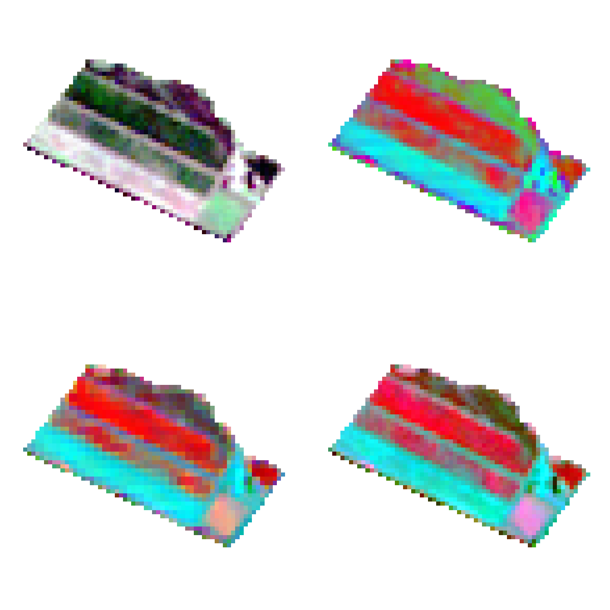
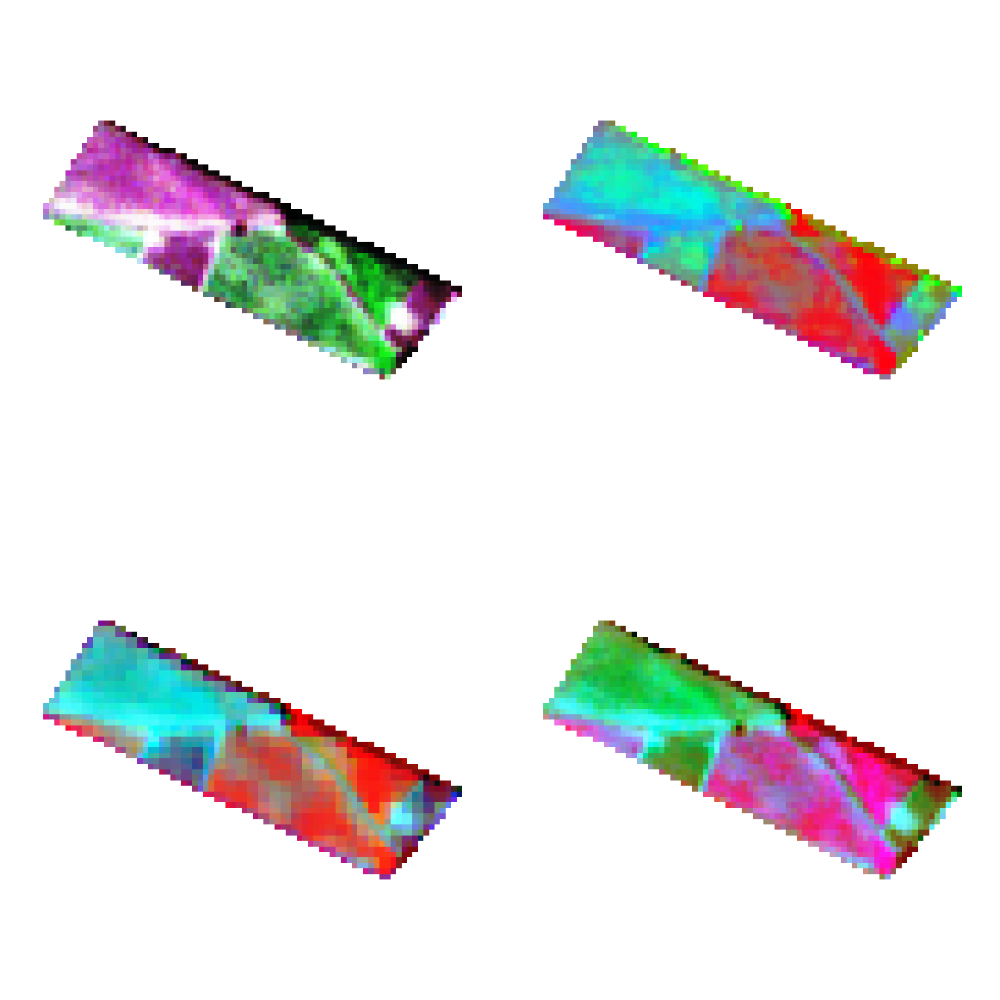
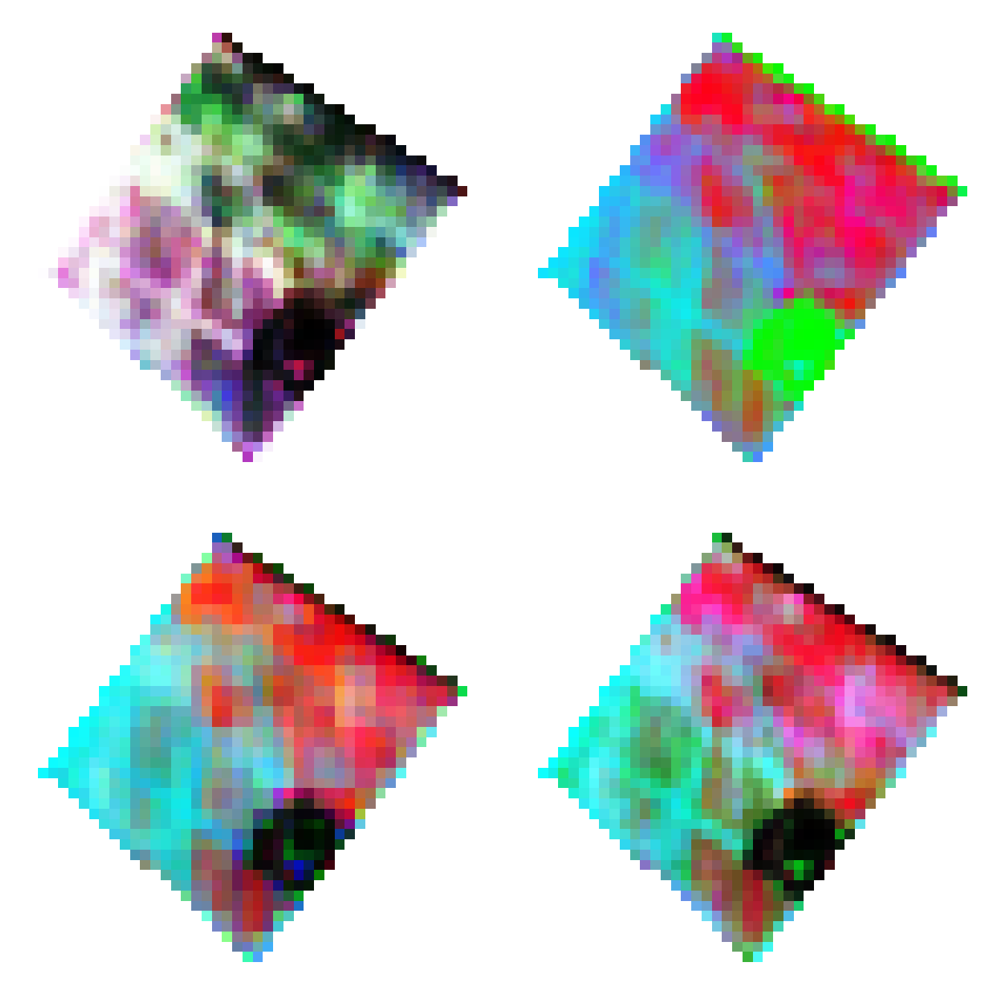
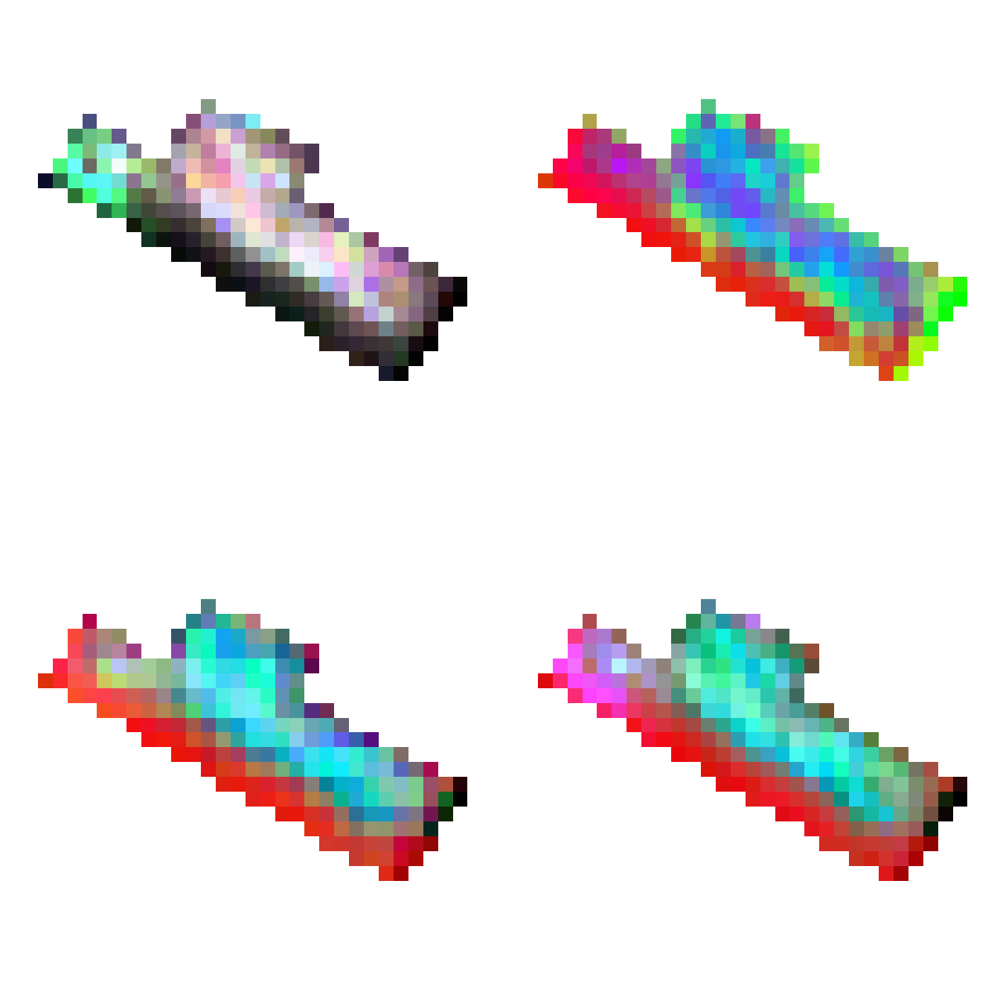

Sección 3 Composición de imágenes
En esta sección se presenta la composición de imagenes de color verdadero junto con 3 composiciones que permiten resaltar caracteristicas de la vegetación.
3.1 Fundo Rondadero

Figure 3.1: Composición de color
3.2 Predios Fernando Rueda
3.2.1 Predio 1

Figure 3.2: Composición de color
3.2.2 Predio 2

Figure 3.3: Composición de color
3.2.3 Predio 3

Figure 3.4: Composición de color
3.2.4 Predio 4

Figure 3.5: Composición de color
3.2.5 Predio 5

Figure 3.6: Composición de color